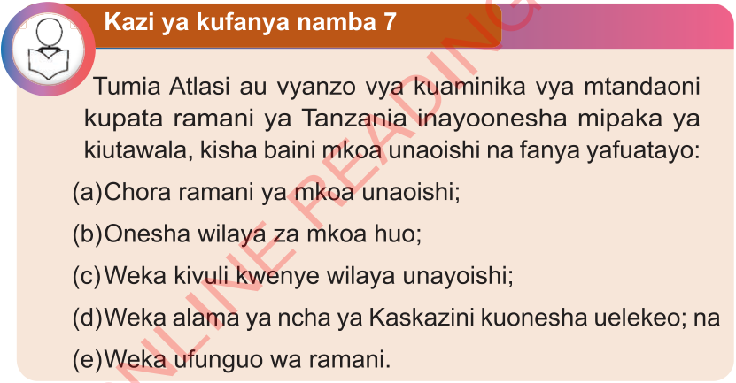

Kazi ya kufanya namba 7
Tumia Atlasi au vyanzo vya kuaminika vya mtandaoni kupata ramani ya Tanzania inayowasilisha mipaka ya kiutawala, kisha baini mkoa unaoishi na fanya yafuatayo:
(a) Chora ramani ya mkoa unaoishi;
(b) Wasilisha wilaya za mkoa huo;
(c) Weka kivuli kwenye wilaya unayoishi;
(d) Weka alama ya ncha ya Kaskazini kuwasilisha uelekeo; na
(e) Weka ufunguo wa ramani.